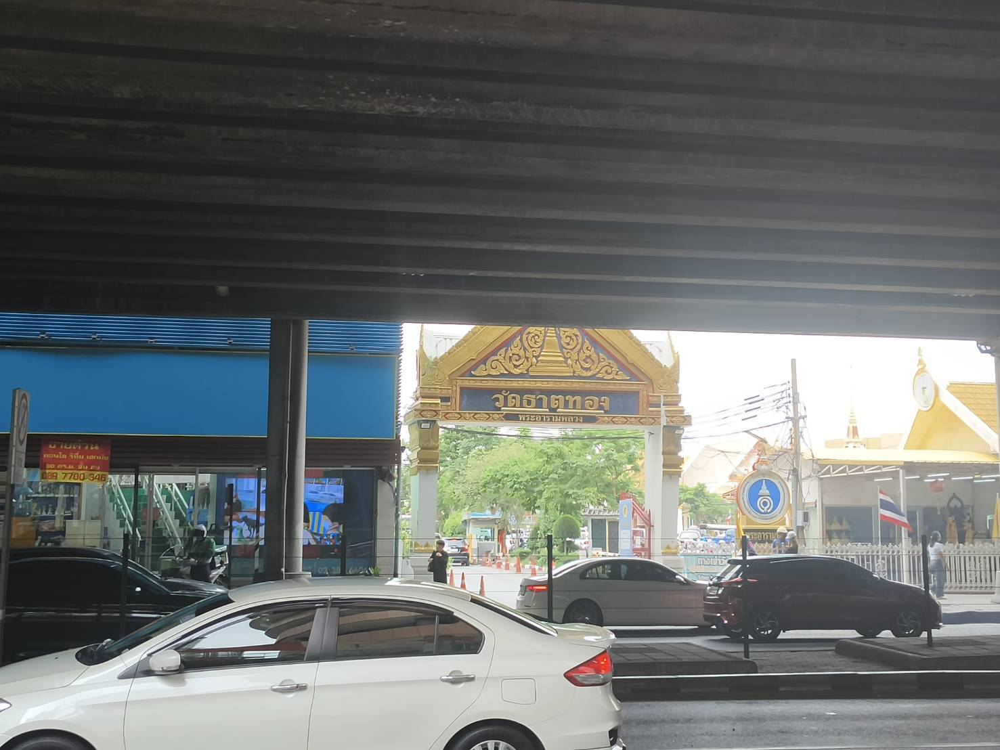
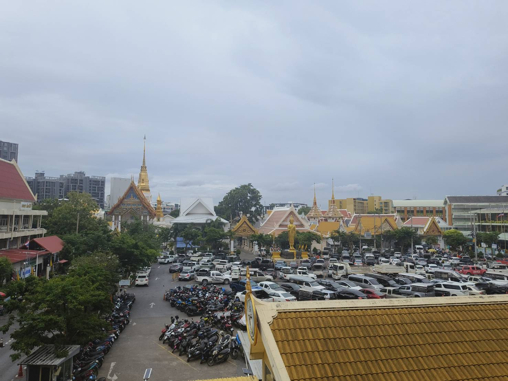
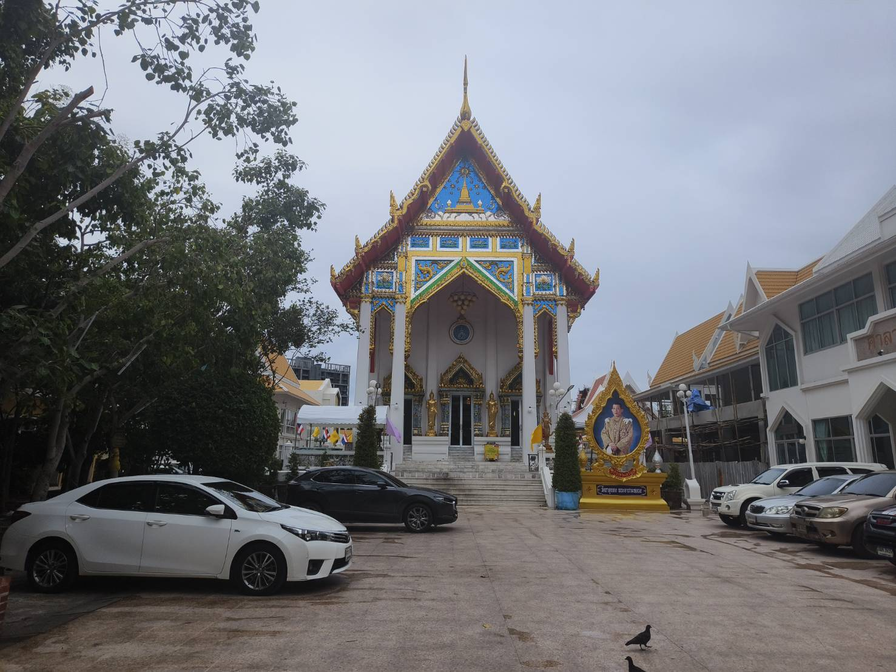
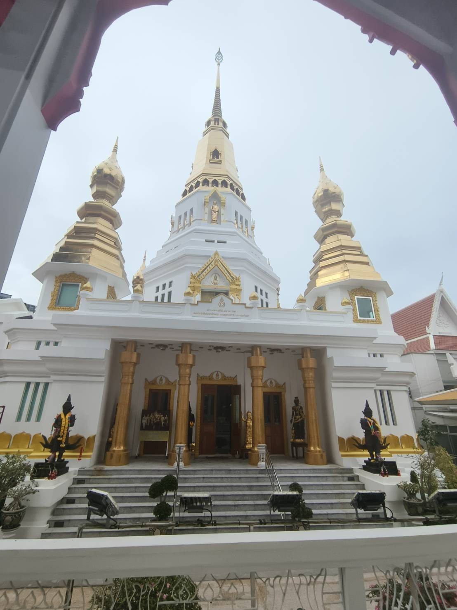

Wat That Thong (วัดธาตุทอง พระอารามหลวง)


วัดธาตุทอง พระอารามหลวง เป็นวัดที่ตั้งอยู่ติดกับสถานีรถไฟฟ้า BTS เอกมัย ลงจากสถานีมาก็สามารถเจอได้เลย ก่อนจะเข้าไปถึงข้างในวัด ด้านหน้าก็จะมีพระพุทธรูปให้ไหว้ได้ก่อน มีการลอยเทียนตามสีวันเกิด หล่อเทียน มีที่ให้ถวายสังฆทานอีกด้วย หากเดินเข้าไปจะพบว่าใกล้ๆ กับวัดทั้งฝั่งซ้ายและฝั่งขวาจะมีโรงเรียนวัดธาตุทองตั้งอยู่ แบ่งเป็นประธมและมัธยม

เข้ามาภายในวัดก็จะไม่มีอะไรมากมาย ส่วนใหญ่จะเป็นศาลา โบสถ์ และเจดีย์ เพราะสถานที่ให้กราบไหว้พระจริงๆ นั้นตั้งอยู่ทางด้านหน้าวัดทั้งหมด ภายในเหมือนเพียงแค่เอาไว้จัดพิธีต่างๆ มากเป็นส่วนใหญ่

การเดินทางไปวัดธาตุทอง
- โดยรถไฟฟ้า BTS : สถานีเอกมัย ทางออก 3 วัดอยู่ทางซ้ายมือ
- โดยรถยนต์ส่วนบุคคล : มีที่จอดรถกว้าง